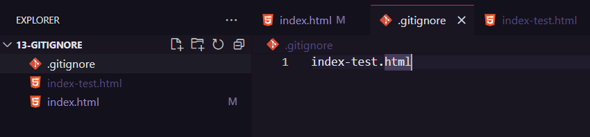

O Gitignore é um arquivo que você escreve lá o src dos arquivos que você não quer que sejão vercionados.Para sinalizar a raiz do projeto de /.Isso é bom para por exemplo .log.Para cirar o arquivo só escrevemos .gitignore é importete que esteja tudo com letra minuscula e o ponto no começo.
 Voltar